Poedit 基础教程
作者：TeliuTe 来源：基础教程网
六、GNOME 翻译指南 返回目录 下一课GNOME 是一个图形化桌面平台，提供了用鼠标和窗口来操作计算机，包括各种常用的应用程序，它的翻译包括程序界面和帮助文档，下面我们来看一个练习；
1、注册和登录
1）先注册一个用户名，点击进入：http://l10n.gnome.org/
在右上角找到“登录”链接，点击进入；
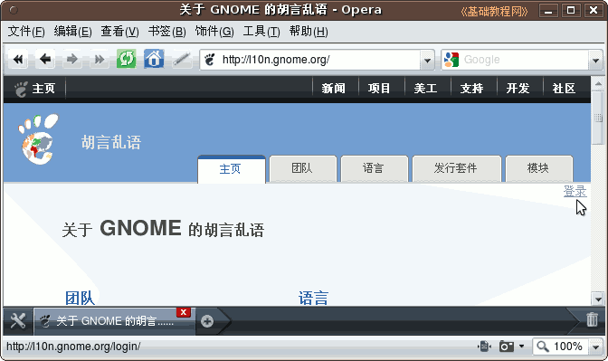
2）在出来的页面里，在中间找到“注册”点击进入注册页面；
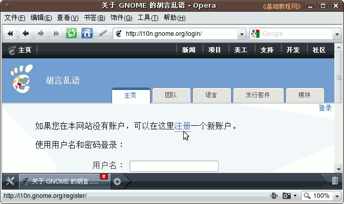
3）在出来的页面中，依次输入用户名、邮箱和右下边的密码，OpenID 不输，然后点右下面的“使用密码注册”；
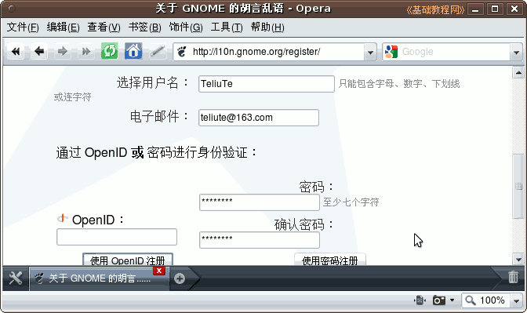
4）提示给你发送了一封邮件，登录自己注册的邮箱，找到一封来自 gnomeweb 的邮件，打开找到里面的链接；
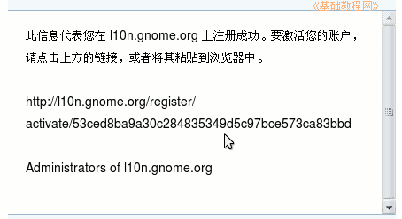
5）复制链接到地址栏打开，出来提示帐户已激活，然后输入用户名和密码，点“登录”就可以了；
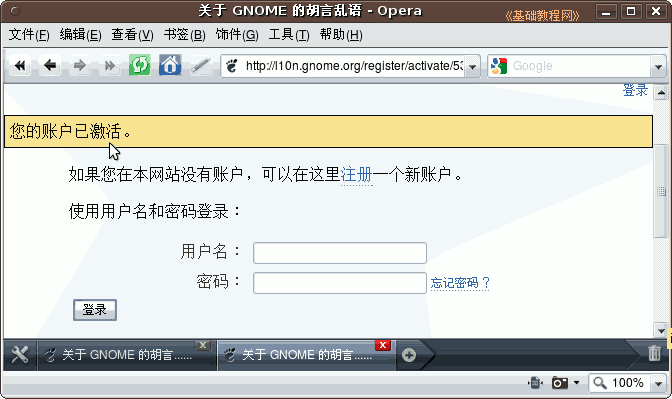
6）点“登录”后提示用户名登录成功；
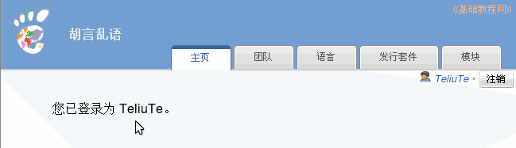
7）以后在右上角点登录时，输入自己的用户名、密码，然后点“登录”就可以了；
2、个人设置
1）下次登录的时候，会提示让加入小组，也可以点右上角自己的用户名；
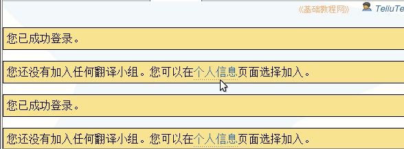
2）点“个人信息”，在出来的“加入新团队”页面中，点击下拉列表，选择 Chinese (China)，然后点旁边的“加入”按钮；
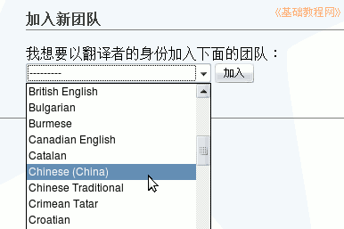
3）提示加入成功，点击“中文(中国)”进入翻译列表，网址是： http://l10n.gnome.org/teams/zh_CN
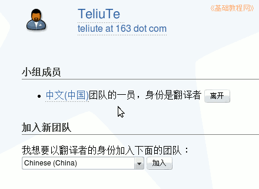
4）在“中文(中国)”里有各个发行版，一般选最上面的一行翻译，内容可以翻译“用户界面”，也可以翻译帮助“文档”；
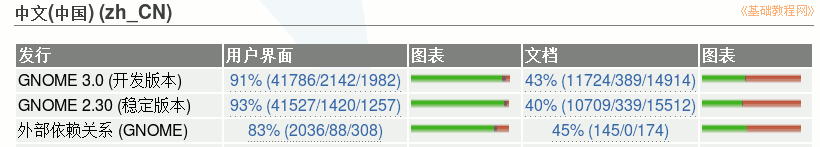
5）在上面还有一个邮件列表“订阅”，点击可以加入到邮件讨论组中；
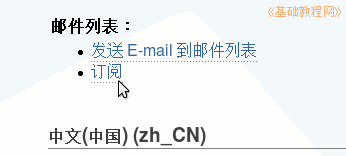
3、翻译软件包
1）注册成功后就可以开始翻译了，进入网址：http://l10n.gnome.org/teams/zh_CN，在第一个发行版里点击“用户界面”或“文档”；
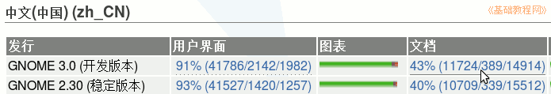
2）点击进入以后，会有许多软件包，绿色是翻译了的，红色是未翻译的，括号里面是数量，选一个点名称进入；
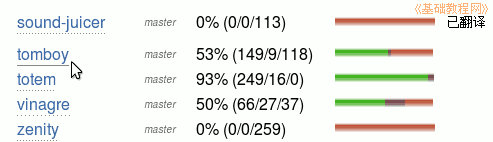
3）在出来翻译状态里，瞄准“已翻译”旁边的小图标点右键，选“目标另存为”，把要翻译的 po 包下载下来；
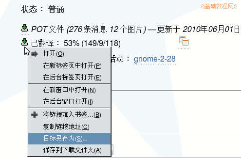
4）下载下来以后，就可以开始翻译了，用poedit或其他翻译工具，如果是pot模板，先生成po文件，具体请参阅前面内容；
4、提交翻译
1、在软件包翻译状态页面中，下边有一个“操作”项目，在列表中选“占用此文件并翻译”，然后点“提交”就可以占用这个包的翻译；
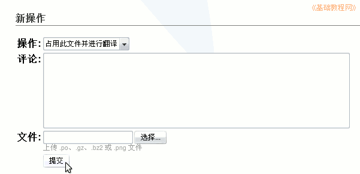
2）翻译好以后，再到这里来，在列表中选择“上传翻译”，再点下边的“选择”按钮，找到翻译好的 po 文件，最后点“提交”即可完成；
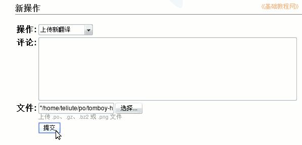
3）提交上以后，下面会出来显示出来三个链接：翻译的、合并的以及二者的对比页面，可以分别点进去看看；
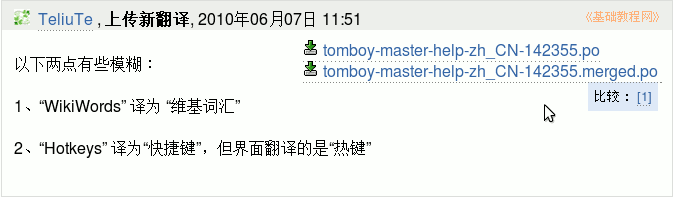
4）其他还可以边翻译、边学习，也可以到Ubuntu 中文论坛的翻译版看看；
http://forum.ubuntu.org.cn/viewtopic.php?f=17&t=234741
本节学习了翻译 GNOME 软件包的基本操作，如果你成功地完成了练习，请继续学习下一课内容；
本教程由86团学校TeliuTe制作|著作权所有
基础教程网：http://teliute.org/
美丽的校园……
转载和引用本站内容，请保留版权信息和本站链接。